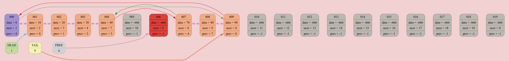

List[0x16f5cae80] born at "/Users/anatolij/Documents/GitHub/List/source/main.cpp": 8, name 'list'
DUMP #1: function INSERT_AFTER was called from /Users/anatolij/Documents/GitHub/List/source/main.cpp: 13

DUMP #2: function INSERT_AFTER was called from /Users/anatolij/Documents/GitHub/List/source/main.cpp: 13

DUMP #3: function INSERT_AFTER was called from /Users/anatolij/Documents/GitHub/List/source/main.cpp: 13

DUMP #4: function INSERT_AFTER was called from /Users/anatolij/Documents/GitHub/List/source/main.cpp: 13

DUMP #5: function INSERT_AFTER was called from /Users/anatolij/Documents/GitHub/List/source/main.cpp: 13

DUMP #6: function INSERT_AFTER was called from /Users/anatolij/Documents/GitHub/List/source/main.cpp: 13

DUMP #7: function INSERT_AFTER was called from /Users/anatolij/Documents/GitHub/List/source/main.cpp: 13

DUMP #8: function INSERT_AFTER was called from /Users/anatolij/Documents/GitHub/List/source/main.cpp: 13

DUMP #9: function INSERT_AFTER was called from /Users/anatolij/Documents/GitHub/List/source/main.cpp: 13

DUMP #10: function OUTSERT was called from /Users/anatolij/Documents/GitHub/List/source/main.cpp: 16

DUMP #11: function INSERT_AFTER was called from /Users/anatolij/Documents/GitHub/List/source/main.cpp: 18
